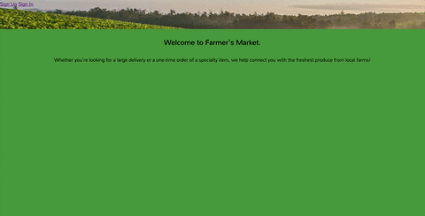

Project 1: Farmer's Market
A fictional marketplace for local farms to post their most recent harvests, built using Ruby on Rails and Postgresql. Users can sign in, browse farms and products, and create orders from different farms.

Project 2: Diddy

An interactive musical app that turns the top row of your computer’s keyboard into a single-octave piano. Built using NodeJs, AngularJs, Express and MongoDB, Diddy allows users to record and play back their own original compositions and stores them in a database.
Project 3: RandomSong

A simple MEAN-stack application that allows users to create and shuffle through a playlist. Just click the randomSong button, and retrieve a truly random song from your collection.